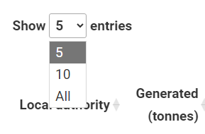
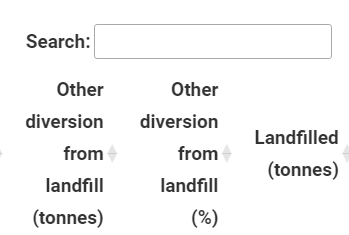
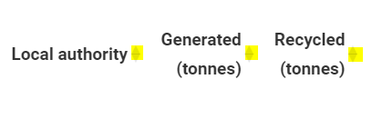
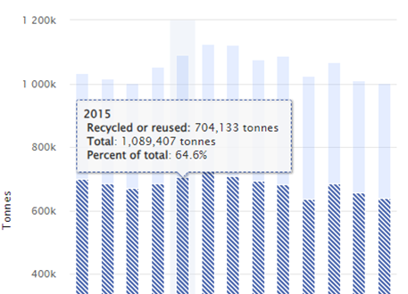
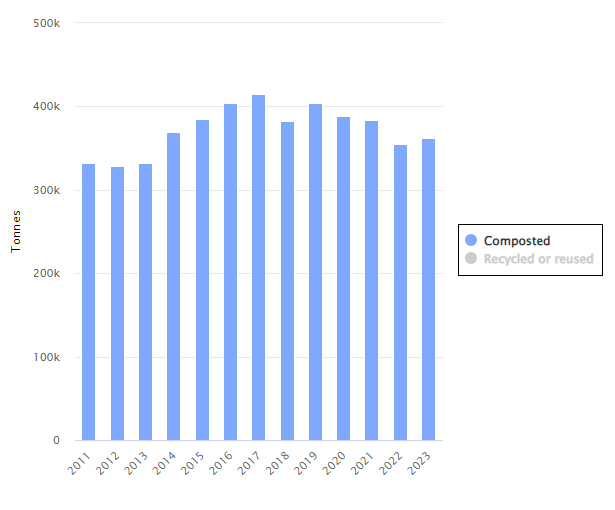
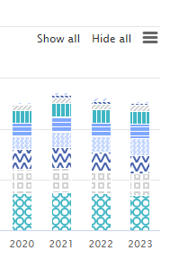

An Official Statistics Publication for Scotland
Last Published on 28th October 2025 9:30 AM
Here we present data and information on the types and quantities of waste generated and managed across Scotland. The available statistics are:
Navigating the charts and tables contained in the statistics
Reports
Each of the statistical commentary reports for the Scottish waste from all sources, Scottish household waste, Waste landfilled in Scotland and Waste incinerated in Scotland can be accessed by clicking the appropriate link above or tabl at the top of this page.
Tabs
Within each report, some of the tables are set in tabs, next to the relevant figure. To view the tables, click on the tab. To return to the figure, click on the figure tab.
For example:
Tables
- By default, the tables are presented either with all rows visible or limited to five. To expand the limited ones, use the drop-down menu at the top left to select to show a greater number, or all rows.
For example:

- The search menu filter at the top right of the tables allows you to filter the rows for particular keyword(s).
For example:

- You can sort the table in ascending or descending for any of the columns by clicking on the arrows by the column header.
For example (the arrows are highlighted in yellow):

- Data download options are available at the foot of each table.
Figures
- In their default state the figures can be hovered over, to show a tool tip and information about where your cursor is hovering. This can be read by a screen reader.
For example:

- If you click on a category in the key/legend it will be removed from the plot (click again to bring it back).
For example (the legend is highlighted by the black box, click one of these options. In other plots the legend may be below the figure):

- On the figures with many categories plotted, there are show all and hide all buttons at the top right. If you only want to see a small number of categories, click hide all and then select the categories you want to see.
For example:

- In the top right corner there are three lines, in this menu you have the figure download options, including the data download for the figure. Here you also have the option to view the figure in full screen.